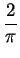
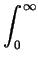
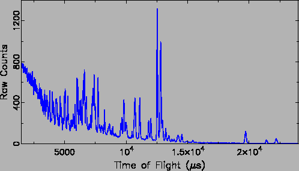

Program PDFgetN [42] was used to carry out many
correction steps, such as the detector deadtime and efficiency,
scattering background, sample absorption, multiple scattering,
in-elasticity effects, and normalization by the incident flux and the
total sample scattering cross-section, to yield the total scattering
structure function, S(Q), where Q is the magnitude of the scattering
vector. The PDF, G(r), is then obtained by a sine Fourier transform
according to
G(r) =


Q[S(Q) - 1]sin QrdQ.
(3.1)
Fig. 3.10 shows one example of
the raw diffraction data directly coming from the experiments.
Figure 3.10:
One example of experimental raw data from neutron
powder diffraction. The x axis is the neutron time of flight
(TOF), and y axis denotes the measured intensity.

Examples of
F(Q) = Q(S(Q) - 1) and G(r) from both neutron experiments are shown
in Fig. 3.11. Qmax of 32.0 Å-1 was used for
LaMnO3(A) NPDF data, while Qmax of 26.0 Å-1 for LaMnO3(B) SEPD
data. The 980 K NPDF data appeared to subject to fluctuating incident
beam profiles during collection, and will be ignored in our data
interpretations. All other PDFs show high quality. Extensive
structural modeling immediately followed.
Figure:
Left half shows the NPDF data from sample LaMnO3(A)
at 300 K and right half shows the SEPD data from sample LaMnO3(B)
at 300 K. The annotations are, (a) The experimental reduced
structure function
F(Q) = Q(S(Q) - 1). (b) The experimental G(r) obtained by
Fourier transforming the data in (a).